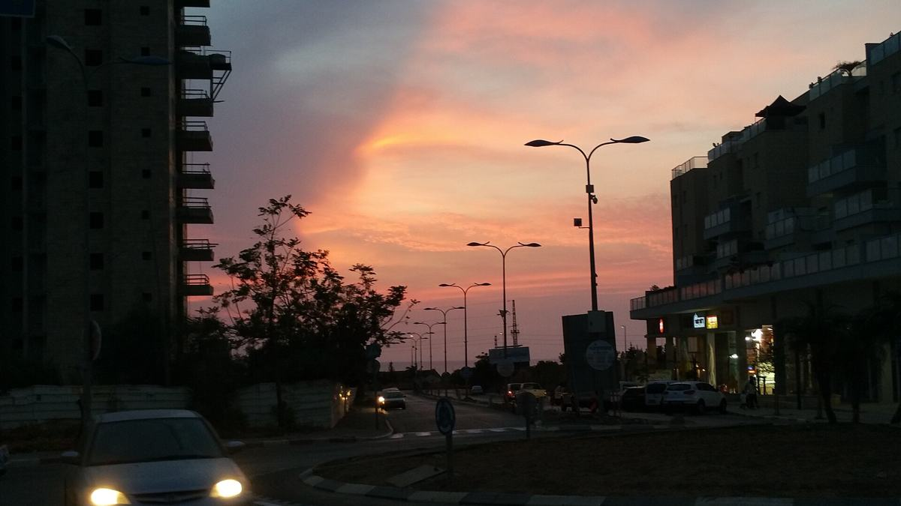
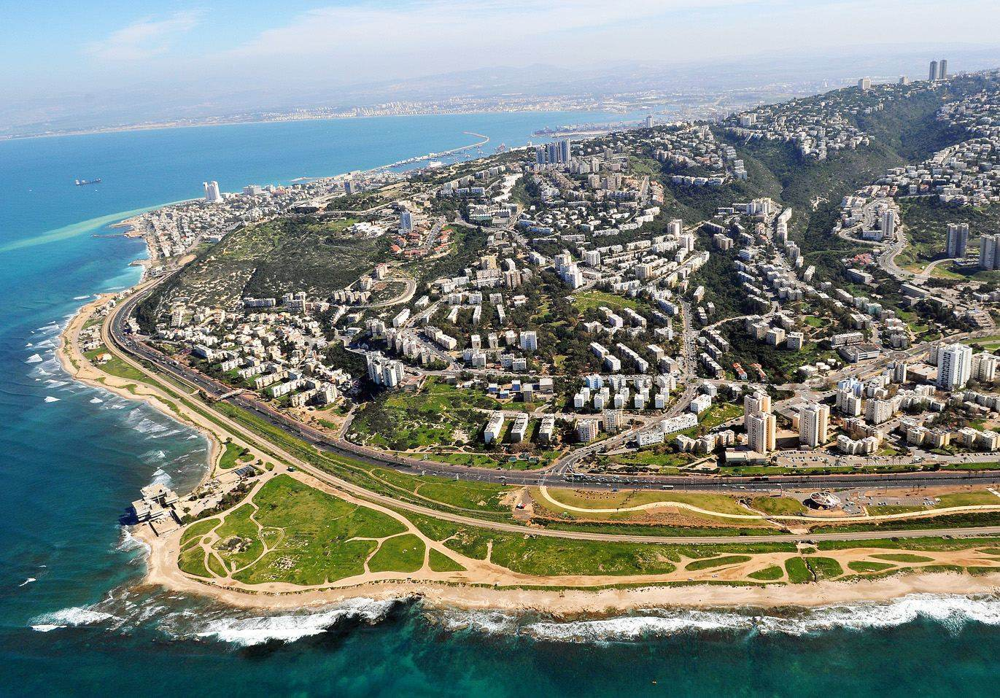
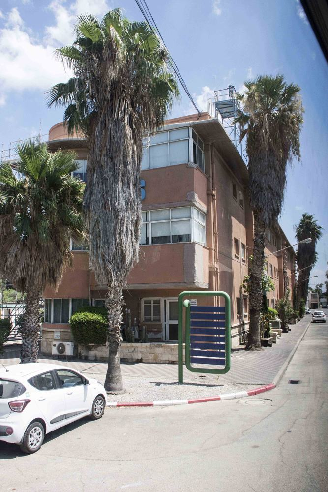
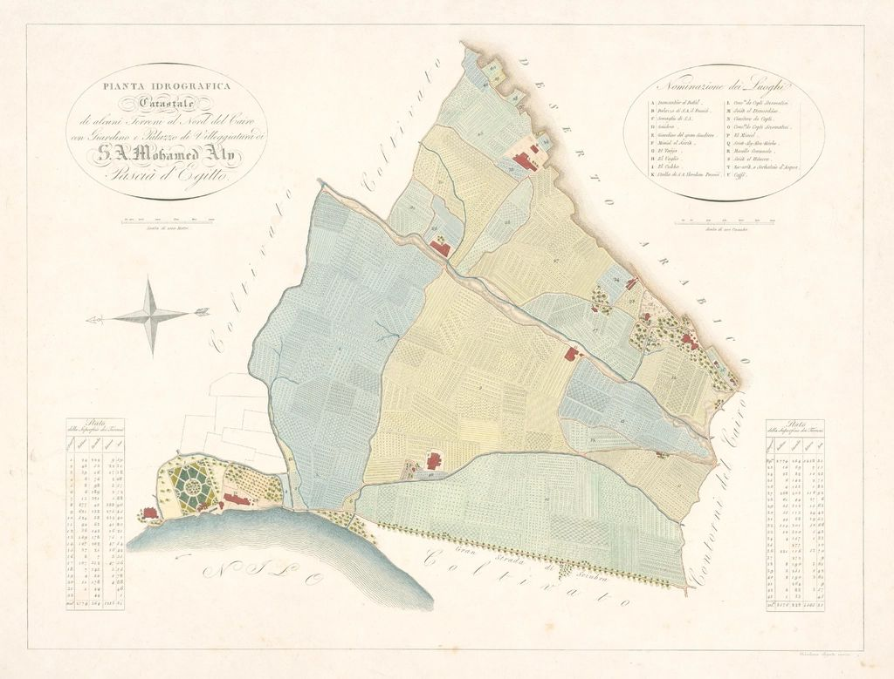
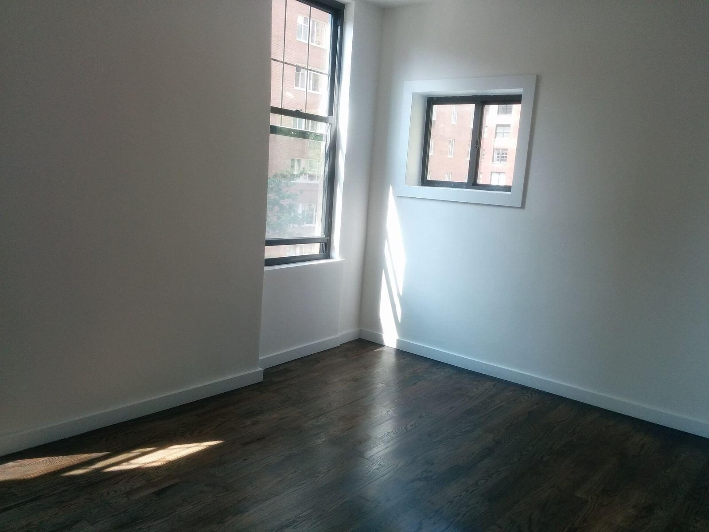

נסח רישום מקרקעיןLand registry extract
- גושBlock
- 12345
- חלקהParcel
- 67
- תת חלקהSub-parcel
- 8
- שטח רשוםRegistered area
- 84.6
הנסחThe extract
מי רשום כבעלים, ומה בדיוק רשום. פרטים להמחשה.Who is registered, and exactly what. Illustrative details.
קונספט לדוגמה שנבנה עבור ליאור משה שמאי מקרקעין · זה אינו האתר הרשמי של העסקA sample concept built for Lior Moshe, Real Estate Appraiser · This is not the business’s official website
שומות והערכות שווי לנכסים, ממשרד ברחוב השחף 1 בטירת כרמל.Property appraisals and valuations, from his office at 1 HaShahaf St, Tirat Carmel.
5.0· 22 ביקורות בגוגל· 22 Google reviewsטירת כרמל, חיפה והכרמל: רחובות, בתים וקרקע.Tirat Carmel, Haifa and the Carmel: streets, homes and land.





גררו כדי לסובב · חלק מהתמונות להמחשהDrag to turn · some pictures are illustrative
ליאור משה, שמאי מקרקעין. המשרד ברחוב השחף 1, טירת כרמל.Lior Moshe, real estate appraiser. The office is at 1 HaShahaf St, Tirat Carmel.
“אני ממליצה באופן אישי במיוחד על ליאור משה - אדם אמין, מקצועי וקשוב לצרכים.”“I personally recommend Lior Moshe in particular – a reliable, professional person who listens to your needs.”
אורך הקיר, לאורך הפאנל.The wall’s length, along the skirting.
תמונה ומידות להמחשהIllustrative photo and figures
4.10 × 3.20
מפות, נסחים, מכשירים ומידות: החומר שממנו בנויה הערכת שווי.Maps, registry extracts, instruments and measurements: what a valuation is made of.
נסח רישום מקרקעיןLand registry extract
מי רשום כבעלים, ומה בדיוק רשום. פרטים להמחשה.Who is registered, and exactly what. Illustrative details.
גבולות החלקה על הקרקע.The parcel’s lines on the ground.
תאודוליט של סוקרי ארץ ישראל במאה ה-19. תמונה להמחשה.A 19th-century theodolite of the Palestine survey. Illustrative.
0.00 מ׳m
5.0
ראשון–חמישי 8:00–17:00 · שישי 8:00–12:00Sun–Thu 8:00–17:00 · Fri 8:00–12:00
שלוש בחירות, וההודעה מוכנה לשליחה.Three choices, and the message is ready to send.
אל: ליאור משה · וואטסאפTo: Lior Moshe · WhatsApp
שליחה בוואטסאפSend on WhatsApp“מקצועי, יסודי ואמין. ידע רחב ויכולת להסביר כל פרט בצורה ברורה ומובנת. הפגין סבלנות רבה לאורך כל התהליך וזמינות גבוהה. ממליצה בחום.”“Professional, thorough and reliable. Broad knowledge and the ability to explain every detail clearly. Showed great patience throughout the whole process, and was very available. Warmly recommended.”
“אני רוצה להמליץ בחום! שירותי סבלני ומקצועי עם ידע נרחב כל שאלה ששאלתי קיבלתי תשובה מפורטת באמת ממליץ מכל הלב!”“I warmly recommend him! Helpful, patient and professional, with broad knowledge. Every question I asked got a detailed answer. Truly recommended with all my heart!”
“ליאור מקצועי אמין וסבלני, היה נעים לעבוד מולו. ובמחיר הוגן. ממליצה בלב שלם”“Lior is professional, reliable and patient; it was pleasant working with him. And at a fair price. I recommend him wholeheartedly.”
“באופן אישי ממליצה מאוד על משרד ליאור משה מקרקעין המייצג מבחינתי מקצועיות מדרגה ראשונה,אנושיות, אמינות יושרה וזמינות .”“Personally, I highly recommend the office of Lior Moshe Real Estate, which for me stands for first-class professionalism, humanity, reliability, integrity and availability.”
“התרשמתי מאוד לטובה מהשירות שקיבלתי. צוות מקצועי ואדיב, ואני ממליצה באופן אישי במיוחד על ליאור משה - אדם אמין, מקצועי וקשוב לצרכים.”“I was very favourably impressed by the service I received. A professional, courteous team, and I personally recommend Lior Moshe in particular – a reliable, professional person who listens to your needs.”
ברחוב השחף 1 בטירת כרמל.At 1 HaShahaf St, Tirat Carmel.
ראשון עד חמישי 8:00–17:00, שישי 8:00–12:00. בשבת המשרד סגור.Sunday to Thursday 8:00–17:00, Friday 8:00–12:00. Closed on Saturday.
איזה נכס, איפה הוא ולמה צריך הערכה. תיק הנכס שלמעלה כותב את זה בשבילכם.Which property, where it is and why you need a valuation. The property file above writes it for you.